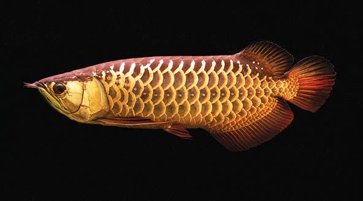
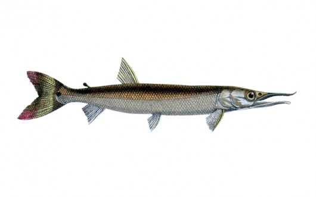

Rio Branco: Caracteriza-se por apresenta-se bastante largo nesta região, porém pouco profundo, especialmente no período seco, época em que se evidencia um grande número de bancos ou ilhas de areia; na cobertura vegetal predomina a presença de savana e alguns trechos com palmeiras.

O Aruanã habita pequenos rios, igarapés e trechos de florestas inundadas. Ficam bem próximos da superfície, onde caçam dentro e fora d’água. Costumam dar grandes saltos, de até 2 metros, para apanhar artrópodes ou fugir de predadores como os Botos. Em águas pouco oxigenadas, o Aruanã nada com os barbilhões projetados para frente para conseguir oxigênio na superfície da água.
Sendo um dos principais afluentes do rio branco, e ganhando muito destaque dentre os pescadores, considerado como um excelente lugar para pesca, o Rio Uraricoera possui um grande destaque. Aqui, você tem a possibilidade de encontrar praticamente todas as espécies presentes no rio branco, mas sendo as espécies tucunaré e aruanã as mais frequentes.

É um peixe piscívoro, que se alimenta de peixes menores e crustáceos, atacando suas presas com ímpeto, dando saltos sucessivos e acrobáticos, com o corpo todo para fora d'água, impulsionado somente pela nadadeira caudal, para evitar que outros da mesma espécie roubem sua valiosa presa.
O Rio Jauaperi é famoso pela pesca esportiva, o Rio Jauaperi vem ganhando bastante destaque nos últimos anos, principalmente pela grande quantidade de espécies e possibilidades no ramo da pesca esportiva. Localizado na fronteira entre Roraima e Amazonas, neste rio você consegue encontrar espécies como o tucunaré-açu, tucunaré-pinima, aruanã e bicuda.